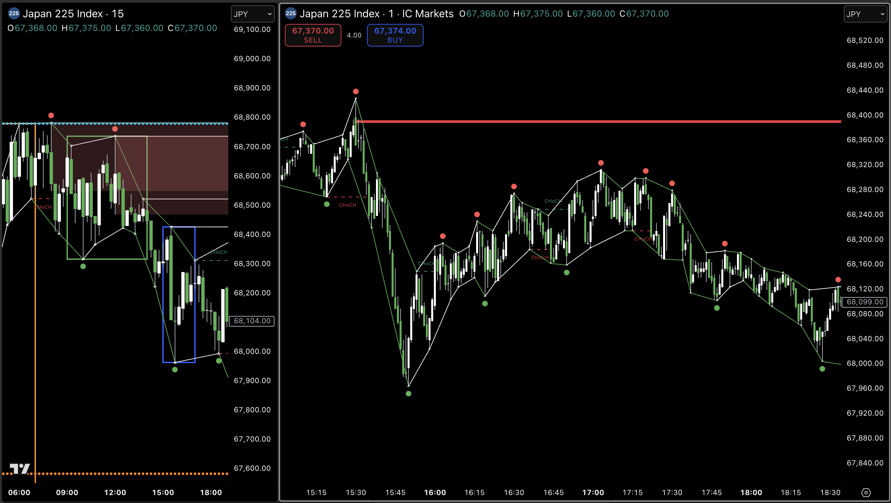
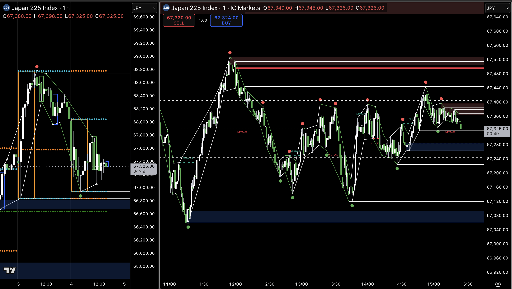

After the trade in example 3 above, the price was trending but also largely consolitating quite tightly between the recent two, more widely spaced PP. These are not ideal conditions, because of the lack of real direction and volitility.

This example of non tradable condidions is very much like the one above, about 23 hours before. The price was floating between the most recent wider PP with no clear indication of which of those PP would be swept next.
